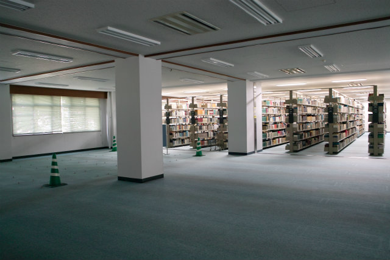
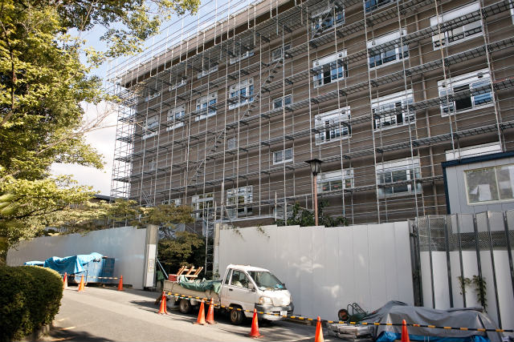

| ・耐震補強工事 (H25.09.05) | |||
松ヶ崎キャンパスは西も東も耐震補強工事です。工場移転も耐震補強工事の一環でした。 |
|||
|
図書館も外観は特に変わりませんが、、、 |

工事のために書架が大きく移動して不便 | ||
|

東1号館は半分終わったので、次の半分に移行 |
武道場の枝垂れ桜が良い感じで枝打ちされました | ||
|
何か建つ予定。噴水が無くなり、恒例の集合写真が、、、 |
10号館南は囲いの中が資材置き場に | ||
|
工場の左半分が改修 |
すごい圧迫感がある壁です | ||